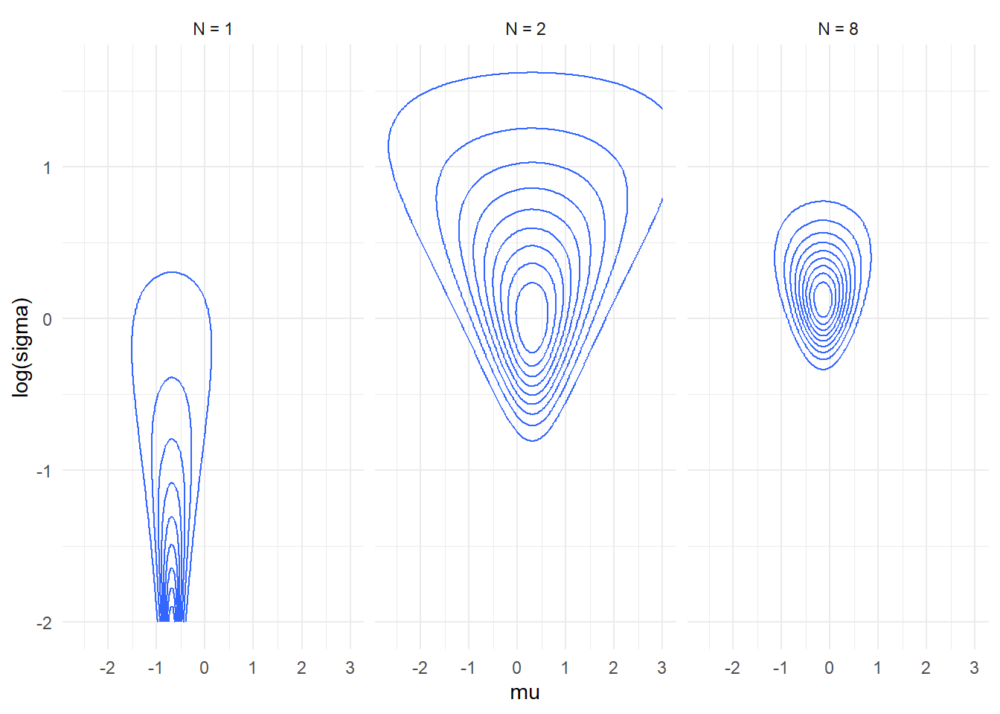

library(dplyr)
##
## Attaching package: 'dplyr'
## The following objects are masked from 'package:stats':
##
## filter, lag
## The following objects are masked from 'package:base':
##
## intersect, setdiff, setequal, union
library(magrittr)
library(ggplot2)
library(tidyr)
##
## Attaching package: 'tidyr'
## The following object is masked from 'package:magrittr':
##
## extract
theme_set(theme_minimal())
Some technical Stan stuff
- Back to Task
4 from past lesson
- Here is a plot of how likelihood of the simple normal model with
unknown mean and standard deviation changes as we add data points. Note
that for N=1 the plot is truncated as the density grows without bounds
as \(\log \sigma \to \infty\) and \(\mu \to y_1\).
- The plots don’t include prior, just the likelihood. Prior improves
things a bit, but not enough (as witnessed by the warnings from
Stan)
- Note that the likelihood is still visibly skewed (and thus
non-normal) even for quite large datasets.
plot_densities <- function(n_data_vals, mu_range = c(-3,3), log_sigma_range = c(-2,2)) {
set.seed(566522)
y = c(-0.6906332, 1.2873201, 2.0089285, 0.1347772, -0.8905993, -0.8171846, rnorm(max(1, max(n_data_vals))))
underdetermined_theory <- crossing(mu = seq(mu_range[1], mu_range[2], length.out = 200), log_sigma = seq(log_sigma_range[1], log_sigma_range[2], length.out = 200),
data.frame(y_id = 1:length(y), y = y), n_data = n_data_vals
) %>%
filter(y_id <= n_data) %>%
mutate(log_density_point = dnorm(y, mu, exp(log_sigma), log = TRUE)) %>%
group_by(mu, log_sigma, n_data) %>%
summarise(log_density = sum(log_density_point), .groups = "drop") %>%
group_by(n_data) %>%
mutate(rel_density = exp(log_density - max(log_density))) %>%
ggplot(aes(x = mu, y = log_sigma, z = rel_density)) + geom_contour() + #geom_raster() +
facet_wrap(~n_data, nrow = 1, labeller = label_bquote(cols = paste(N, " = ", .(n_data)) )) + scale_y_continuous("log(sigma)")
underdetermined_theory
}
plot_densities(c(1,2,8))

plot_densities(c(15, 30, 50), mu_range = c(-1,1), log_sigma_range = c(-0.5,1))
Using integers in Stan programs
- Ints can only ever be data
- Arrays are declared as
array[size] base_type; (arrays
in Stan manual)
- i.e. array of
N ints is array[N] int;
- You can have arrays of anything (i.e. vectors, matrices, bounded
integers, …)
- Poisson and negative binomial distibution
- Modelling log mean
- The mean - overdispersion parametrization of negative binomial
Workflow
- We will follow the Bayesian workflow from https://arxiv.org/abs/2011.01808 - we’ll start with the
most useful and simple steps in this lesson.
- Build slowly and test as many assumptions of the model as possible
- The assumptions will usually be wrong. But are they importantly
wrong?
- The goal is to be able to confidently build complex models
- Steps of modelling, that need to be checked:
- Prior, fit to data (likelihood), computation
- Checking parameter recovery from simulations is a simple computation
check
- Priors can (and should) be tested: prior predictive check
- Simulate data from the prior, check that the data match domain
expertise
- If they don’t the prior is bad
- It may however be unclear how to get a better prior…
- Posterior predictive checks:
- Compute something about a dataset (e.g. variance for each group of
observations)
- Copmute the same something about each posterior draw
- If the values for the actual dataset lie in the extreme of the
posterior distribution, something is wrong
- Simple model first. Individual components first separately, then
joined.